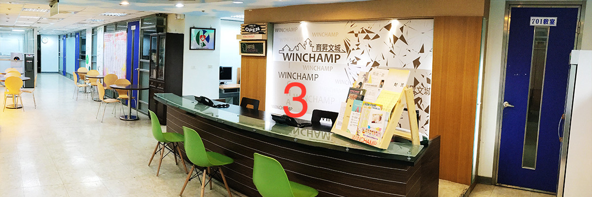
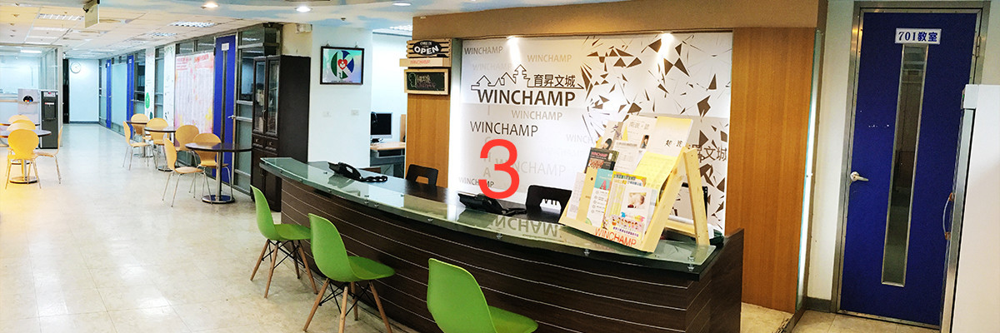

 
◎ 管理照顧 100 分
文城的專任導師及課輔人員，將會協助你設計專屬的學習計畫，並定期約談同學，確認學習成效，進而導引至正確方向。◎ 制度管理 100 分
文城向以嚴格管理著稱全台，良好的讀書風氣是我們全力維持的傳統！專屬專任教務體系，配合嚴格教學訂定嚴格考評，並有專人蒐羅北中南各校考題，透過特殊管道取得機密題庫提供參考，斥資百萬邀請一流師資編輯群，針對每週上完之課程編輯試題作業，讓你回家後透過作業與試題立即掌握重點與方向。加入我們可以擁有絕佳的題庫，完成自我訓練。◎ 口碑經驗 100 分
30 餘年來，超過60,000名學子的選擇、見證與肯定！補教界唯一網路超過1萬筆討論專題的口碑行銷！唯一不依賴車廂、報紙及電視廣告宣傳，文城僅透過歷年不墜的口碑經營，絕對全國第一！◎ 教學用心 100 分
精緻小班全科輔導與教學，配合最完善的考試輔導制度，我們就是可以讓你有不同的感受，讓你突飛猛進！◎ 師資實力 100 分
網羅全國最強最整齊的各科家教班師資群，全部專屬專任，科科整齊，個個強棒，且定期問卷，反應學生需求！文城升大學並耗資百萬，成立編輯中心匯整金鑽級的講義、試題，確保您所擁有的學習資源最完整！◎ 競爭力 100 分
擁有與台北市相同的師資、教材、教學、管理和一手資訊，擁有與台北學生相同的競爭環境！